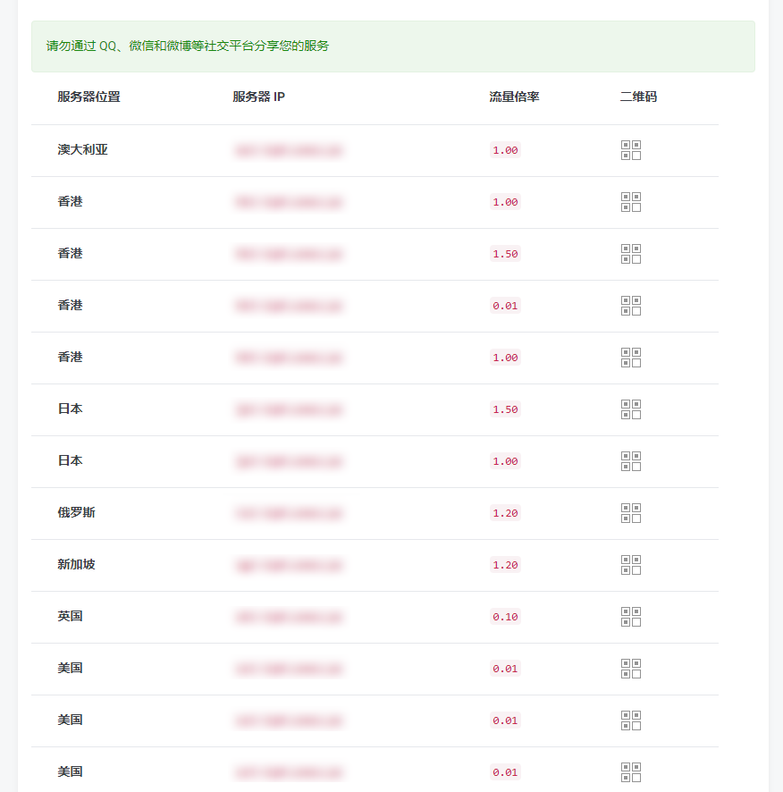

Shadowsocks 设置方法 (iOS)¶
系统要求¶
在安装之前，请始终确保您的系统满足最低系统要求。
您需要具备 iOS 9.0 或更高版本才能运行 Shadowrocket 。 如果您的 iOS 系统版本较旧， 则请先升级到 iOS 9.0 或更高版本
您需要具备 iOS 10.0 或更高版本才能运行 Potatso Lite 。 如果您的 iOS 系统版本较旧， 则请先升级到 iOS 10.0 或更高版本。
Apps 下载¶
请使用非中国内地区的 Apple ID 搜索并购买应用，本站并不提供Apple ID，也不提供破解版的 App。
Potatso Lite （免费）
Shadowrocket （收费）
Potatso 2（收费）
App Store 上的 App 由其作者进行维护，如有疑问，请联系其作者。
下面对Potatso Lite、Shadowrocket做介绍
Shadowsocks 配置 - Potatso Lite¶
1. 获取SS账号¶
单击 “服务” > “我的服务” > 选择 “你可用的产品/服务”。
查看你的节点信息。
以上操作可能不相同，主要就是从分享节点的网站中获取节点配置信息。
{kind=link}
2. 添加服务器¶
Potatso Lite 的设置过程：
从 App Store 安装后打开 Potatso Lite。
点击 “立即使用” > “现在添加”。
{kind=link}
以下两种方法，任选其一
一、扫码配置
点击 “二维码” > “Potatso Lite 想访问您的相机”的窗口，选择 “好” > 扫描你节点的二维码，节点将自动添加成功。
二、手动配置
点击 “添加” > 填写代理。
选择 “Shadowsocks“ > 填写 “服务器” > 填写 “端口” > 选择 “加密” > 填写 “密码” 。
填写 “备注” 为可选项 > 点击右上角的 “✔”， 设置完成。
{kind=link}
开始代理
点击 “开始” > 选择 “Allow” > 开启 “智能路由”。
当看到左上角出现 VPN 字样时，代表连接成功。
智能路由 表示可以实现自动代理， 及本来可以访问的网站不会经过代理，推荐日常使用。
{kind=link}
Shadowsocks 配置 - Shadowrocket¶
下载安装后打开 Shadowsocks

点击 Add Server 即可添加您的节点信息
扫码配置 点击左上方图标(绿色)即可扫码配置
手动配置 点击右上方 + (橙色)后按照提示配置

在您完成配置后请到 Shadowrocket 的 Home 界面点击第一个滑块以开启 (紫色区域)
如需要关闭 Shadowsocks，打开 Shadowrocket 的 Home 点击滑块即可关闭